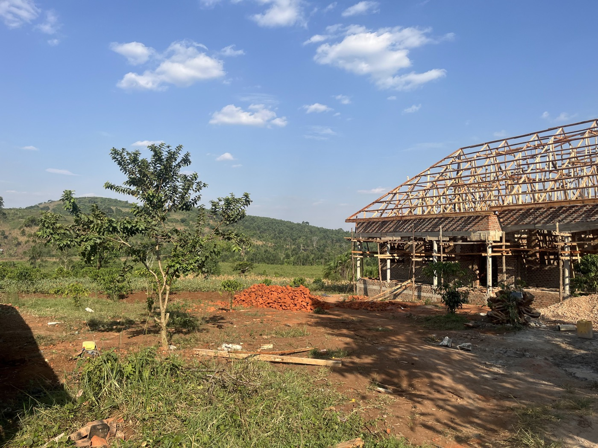
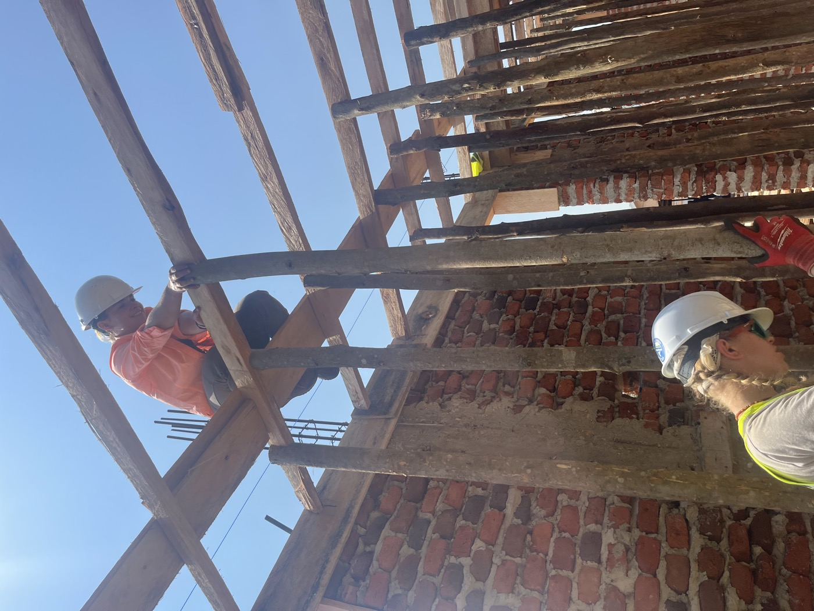
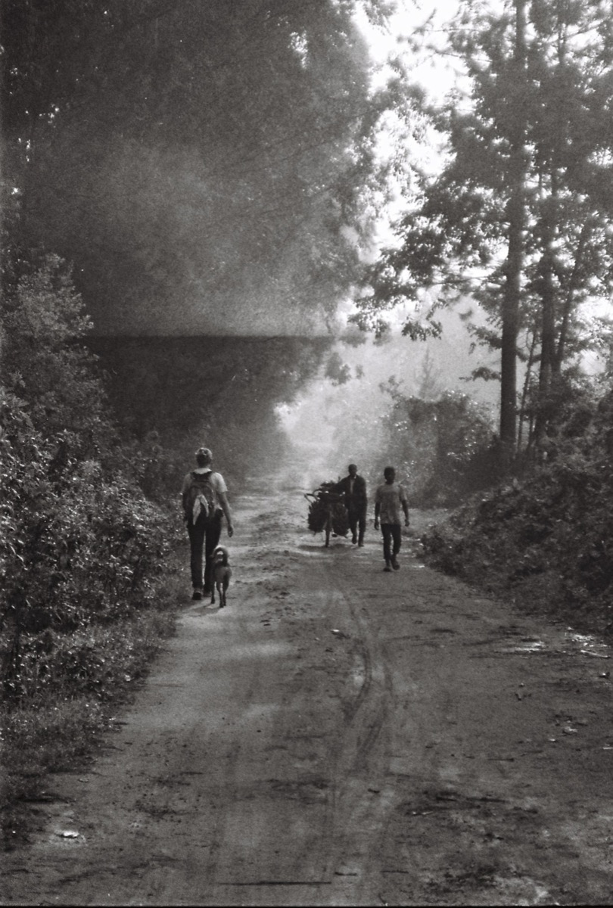
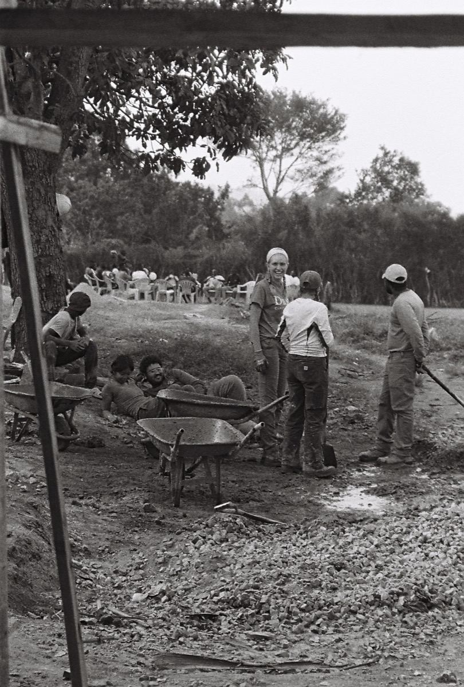

In Country Project Manager
Rural School Construction — Kaihura, Uganda
As In Country Project Manager, I led an 11-person team on what was meant to be an 8-week secondary school construction project in Kaihura, Uganda, building on design work we'd done as a team over the previous year.


Working alongside the local construction crew, we bonded quickly — with them, and with the kids and staff at the orphanage where we were staying for the trip.



About four weeks in, we were told the project had to stop — we'd run out of funding, and there was no more work to do on the school for the remaining four weeks we had on the ground.
As project manager, it was on me to figure out what to do with that time. Instead of sitting idle, we leaned on the relationships we'd built and started following the Ugandan construction workers to their other job sites to help however we could — some days walking five miles each way just to get there, then working from sunup to sundown. It ended up being one of the most meaningful parts of the trip, and I'm still in touch with a few of the workers today.


Some of the job sites we ended up helping on with the local crew after the school project was paused.